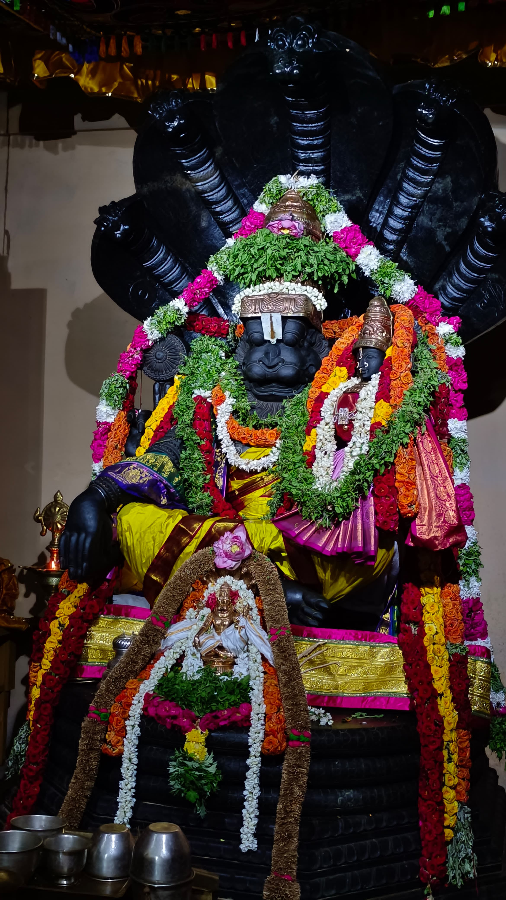

Welcome to the Sri LakshmiNarasimar Temple, a sacred sanctuary dedicated to Lord Narasimha, an avatar of Lord Vishnu. Nestled in the serene surroundings of Salem, Tamil Nadu, our temple stands as a beacon of spiritual solace and divine grace.
The temple is renowned for its stunning architecture, intricate carvings, and the tranquil ambiance that envelops every visitor. Devotees from all over the world come here to seek blessings, participate in vibrant festivals, and immerse themselves in the rich cultural heritage that our temple preserves.
Our mission is to foster a deep sense of devotion and community among our followers. We offer various spiritual services, including daily poojas, special rituals, and community events that bring people together in the spirit of faith and unity.
